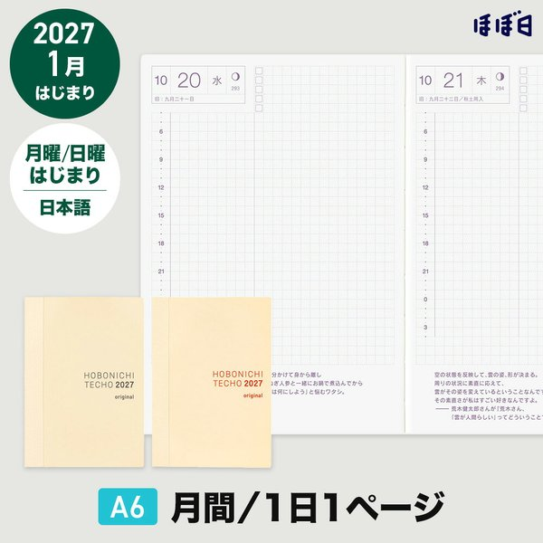
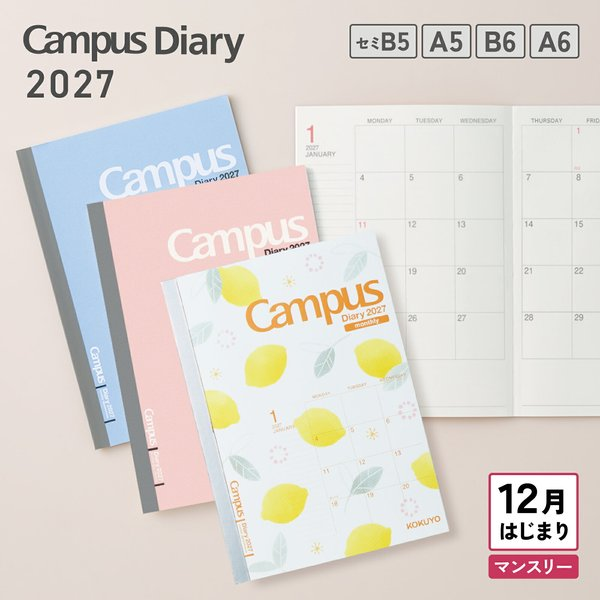
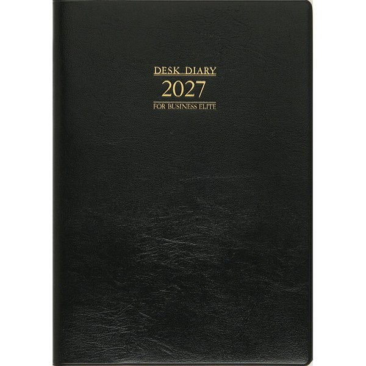
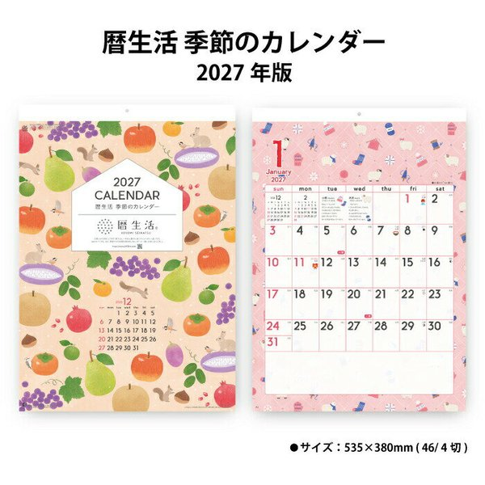
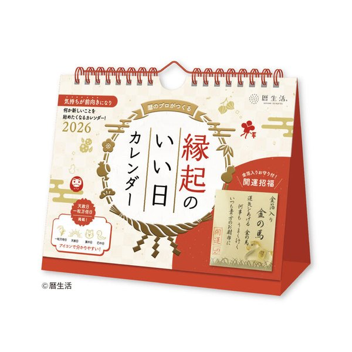
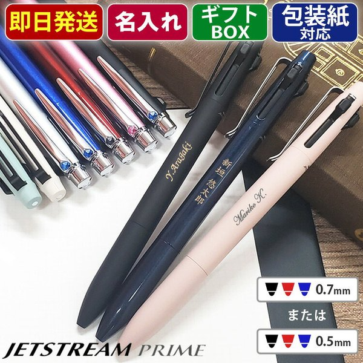
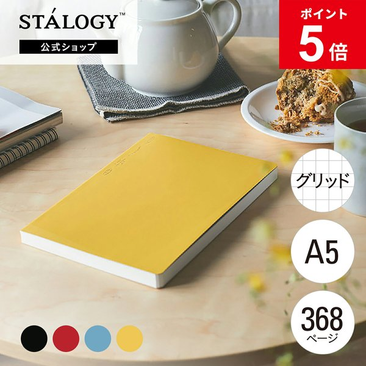
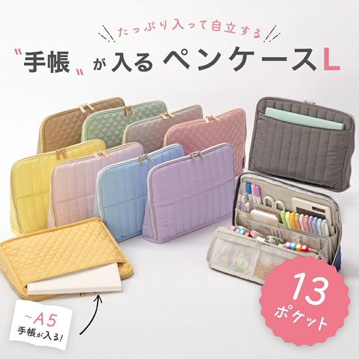
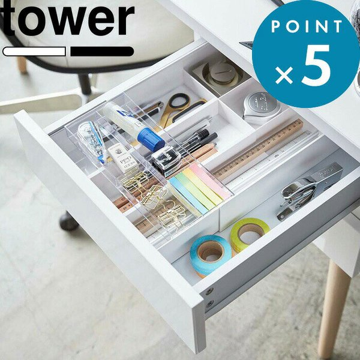
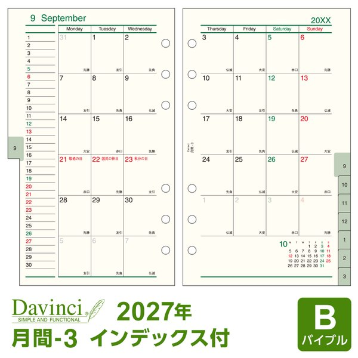

【2027年版】新年の仕事と暮らしが整う！手帳・カレンダー・高機能文房具10選
手帳は、買う時期で選べるものが変わります。11月下旬は2027年版の新作が揃う時期で、人気のモデルから売り切れていきます。年が明けてから探すと、欲しいサイズや曜日はじまりが残っていないことが多いので、今のうちに決めておくのが確実です。
選ぶ軸は、書き込む量、持ち歩くか置くか、そして予定をどこで見るかの3つです。1日の出来事を残したいなら1日1ページのほぼ日手帳、予定を週単位で管理するならウィークリーのビジネス手帳、家族の予定を共有するなら壁掛けカレンダー、というように役割を分けると続きます。月間だけの薄い手帳は、2冊目や持ち歩き用に向いています。カレンダーは、リビングに掛けるものと、デスクに置くものを分けると、家と仕事の予定が混ざりません。文房具は、ペン1本とノート1冊、そしてペンケースかトレーを足すだけで、デスクの上が片付きます。
本記事では、楽天市場で人気・高評価の2027年の手帳・カレンダー・文房具10選を、実売価格とレビュー評価つきで写真付き紹介します。
- おすすめ10選 スペック・特徴比較表
- BEST 1｜ほぼ日手帳2027 オリジナル A6サイズ 本体（1日1ページ・1月はじまり）
- BEST 2｜コクヨ 2027年 キャンパスダイアリー マンスリー・スタンダード（A5・12月はじまり）
- BEST 3｜高橋書店 2027年 手帳 No.67 デスクダイアリー A5判 ウィークリー（黒）
- BEST 4｜暦生活 2027年 壁掛けカレンダー 季節のカレンダー NK60
- BEST 5｜新日本カレンダー 2027年 卓上カレンダー 縁起のいい日 NK-8950（お守り付き）
- BEST 6｜ジェットストリーム プライム 3色ボールペン 名入れ（0.5mm／0.7mm）
- BEST 7｜STALOGY 365デイズノート A5 方眼（1年分を1冊に）
- BEST 8｜Y-Style 手帳が入るペンケースL 大容量（全13ポケット・自立式）
- BEST 9｜山崎実業 tower 伸縮&スライド デスクトレー（ホワイト／ブラック）
- BEST 10｜Davinci 2027年版 システム手帳リフィル バイブルサイズ 月間-3（インデックス付）
- 【読者負担0円】買わなくても得する無料サービス
- まとめ：2027年の手帳・カレンダー・文房具10選の選び方
| 順位 | 商品名 | ブランド | 最大の特徴・おすすめ理由 | 総合評価 |
|---|---|---|---|---|
| BEST 1 | ほぼ日手帳2027 オリジナル A6サイズ 本体（1日1ページ・1月はじまり） | ほぼ日（Hobonichi） | 1日1ページの書き込み量 | 4.71 |
| BEST 2 | コクヨ 2027年 キャンパスダイアリー マンスリー・スタンダード（A5・12月はじまり） | コクヨ | 1ヶ月を1見開きで俯瞰できる | 4.82 |
| BEST 3 | 高橋書店 2027年 手帳 No.67 デスクダイアリー A5判 ウィークリー（黒） | 高橋書店 | A5判のウィークリー | 5.00 |
| BEST 4 | 暦生活 2027年 壁掛けカレンダー 季節のカレンダー NK60 | 暦生活（新日本カレンダー） | 二十四節気と歳時記入り | 4.68 |
| BEST 5 | 新日本カレンダー 2027年 卓上カレンダー 縁起のいい日 NK-8950（お守り付き） | 新日本カレンダー（暦生活） | 縁起のいい日がひと目で分かる | 4.71 |
| BEST 6 | ジェットストリーム プライム 3色ボールペン 名入れ（0.5mm／0.7mm） | 三菱鉛筆（uni） | 名前を刻印できる名入れ対応 | 4.83 |
| BEST 7 | STALOGY 365デイズノート A5 方眼（1年分を1冊に） | ニトムズ（STALOGY） | 1年分を1冊にまとめられる | 4.79 |
| BEST 8 | Y-Style 手帳が入るペンケースL 大容量（全13ポケット・自立式） | Y-Style | 全13ポケットの収納力 | 4.29 |
| BEST 9 | 山崎実業 tower 伸縮&スライド デスクトレー（ホワイト／ブラック） | 山崎実業（tower） | 幅に合わせて伸縮できる | 4.71 |
| BEST 10 | Davinci 2027年版 システム手帳リフィル バイブルサイズ 月間-3（インデックス付） | ダ・ヴィンチ（Davinci） | 見開き両面で1ヶ月を使える | 4.66 |
ほぼ日手帳2027 オリジナル A6サイズ 本体（1日1ページ・1月はじまり）

1日1ページのほぼ日手帳2027、オリジナル（A6サイズ）の本体。月曜はじまりと日曜はじまりを選べ、1月はじまりの1日1ページに、その日の出来事を書き残せます。A6は持ち歩きやすく、カバンに入れてもかさばりません。本体だけを買って、好みのカバーを別に選ぶのがほぼ日手帳の楽しみ方です。楽天市場での実売価格は約2,860円（2026年11月時点）。
- 1日1ページの書き込み量
- A6で持ち歩きやすい
- 曜日はじまりを選べる
- カバーは別売りのため、本体と合わせて選ぶ
- 発売されたばかりの2027年版のため、レビューは28件（2026年11月時点）とまだ少なめです。
コクヨ 2027年 キャンパスダイアリー マンスリー・スタンダード（A5・12月はじまり）

コクヨのキャンパスダイアリー2027、マンスリー・スタンダード。A5・セミB5・B6・A6からサイズを選べ、2026年12月はじまりで月曜はじまりの月間カレンダーです。1ヶ月を1見開きで俯瞰できるので、家族の予定と仕事の締め切りを同じ紙で確認できます。薄くて軽いので、2冊目や持ち歩き用にも向いています。楽天市場での実売価格は約550円（2026年11月時点）。
- 1ヶ月を1見開きで俯瞰できる
- 12月はじまりで早めに使える
- 薄くて持ち歩きやすい
- 月間のみなので、週間の予定管理には別冊が必要
高橋書店 2027年 手帳 No.67 デスクダイアリー A5判 ウィークリー（黒）

高橋書店の2027年手帳、No.67 デスクダイアリー。A5判のウィークリータイプで、1週間の予定とメモを1冊にまとめられます。長く続くビジネス手帳のシリーズで、黒の表紙はスーツの内ポケットにも馴染みます。1月はじまりなので、年明けからそのまま使えます。まずは定番の形から試したい人に向いています。楽天市場での実売価格は約1,606円（2026年11月時点）。
- A5判のウィークリー
- ビジネス手帳の定番シリーズ
- 1月はじまりで年明けから使える
- ウィークリーのため、1日ごとの細かい記録には向かない
- 2027年版は発売直後のため、レビューは2件（2026年11月時点）です。
暦生活 2027年 壁掛けカレンダー 季節のカレンダー NK60

暦生活の2027年壁掛けカレンダー、季節のカレンダー（NK60）。二十四節気と歳時記が書き込まれ、日本の季節の移り変わりを眺めながら予定を立てられます。動物や草花のイラストが月ごとに変わり、リビングやキッチンに掛けても絵のように馴染みます。書き込みやすい紙面なので、家族の予定を書き込むカレンダーとしても使えます。楽天市場での実売価格は約1,518円（2026年11月時点）。
- 二十四節気と歳時記入り
- 月ごとに変わるイラスト
- リビングに馴染むデザイン
- 壁掛けのため、掛ける場所とフックを先に用意する
- 2027年版は発売直後のため、レビューは28件（2026年11月時点）とまだ少なめです。
新日本カレンダー 2027年 卓上カレンダー 縁起のいい日 NK-8950（お守り付き）

新日本カレンダーの2027年卓上カレンダー、縁起のいい日（NK-8950）。大安・天赦日・一粒万倍日といった縁起のいい日がひと目で分かり、開運日を狙って予定を立てられます。付属の御守りは切り取って財布に入れられます。デスクの上に立てておけるサイズで、毎朝の予定確認のついでに日付の縁起も確認できます。楽天市場での実売価格は約1,760円（2026年11月時点）。
- 縁起のいい日がひと目で分かる
- 切り取れる御守り付き
- 卓上に立てて使える
- 卓上サイズのため、家族全員の予定を書くには小さい
- 2027年版は発売直後のため、レビューは7件（2026年11月時点）とまだ少なめです。
ジェットストリーム プライム 3色ボールペン 名入れ（0.5mm／0.7mm）

三菱鉛筆のジェットストリーム プライムに、名前を刻印できる名入れモデル。0.5mmと0.7mmから選べる3色ボールペンで、回転繰り出し式なのでノック音が鳴らず、静かな場所でも使えます。名入れに対応しているため、就職祝いや退職記念の贈り物としても定番です。自分用なら、毎日使うペンを1本だけ良いものに替えるのがおすすめです。楽天市場での実売価格は約4,200円（2026年11月時点）。
- 名前を刻印できる名入れ対応
- 回転繰り出し式で静か
- 0.5mm・0.7mmから選べる
- 名入れは発送までに日数がかかるので、贈り物は早めに注文する
STALOGY 365デイズノート A5 方眼（1年分を1冊に）

ニトムズのSTALOGY 365デイズノートは、1年分のページを1冊にまとめた方眼ノート。A5サイズで、1日1ページの枠に日付と予定、思いついたことを書き込めます。方眼なので図や表も描きやすく、仕事のメモと生活の記録を1冊で兼ねられます。手帳とノートを分けたくない人に向いています。楽天市場での実売価格は約2,937円（2026年11月時点）。
- 1年分を1冊にまとめられる
- 方眼で図や表も描ける
- 仕事と生活の記録を兼ねる
- 1年分を1冊にまとめるため、持ち歩くと重い
Y-Style 手帳が入るペンケースL 大容量（全13ポケット・自立式）

手帳が入る大きさのペンケース、Y-StyleのLサイズ。全13ポケットで、ペンだけでなく定規や付箋、充電ケーブルまでまとめて収納できます。ファスナーを開くと自立してペンスタンドになるので、デスクに置いたまま筆記具を選べます。手帳と文房具を1つにまとめたい人に向いています。楽天市場での実売価格は約4,455円（2026年11月時点）。
- 全13ポケットの収納力
- 開くと自立してペンスタンドに
- 手帳も一緒に入る
- 大容量のぶん、中身を入れすぎるとファスナーが閉まりにくい
- レビューは99件で、評価は4.29と他の文房具よりやや低めです。
山崎実業 tower 伸縮&スライド デスクトレー（ホワイト／ブラック）

山崎実業のtower 伸縮&スライド デスクトレー。引き出しの幅に合わせて伸縮でき、スライド式なので奥のものも取り出せます。筆記具、はさみ、付箋、ケーブルを仕切って入れられ、デスクの上が一目で分かる状態になります。ホワイトとブラックの2色で、木目や白のデスクにも馴染みます。楽天市場での実売価格は約2,200円（2026年11月時点）。
- 幅に合わせて伸縮できる
- スライド式で奥まで取り出せる
- 仕切って小物を整理できる
- 伸縮式のため、引き出しの内寸を測ってから選ぶ
Davinci 2027年版 システム手帳リフィル バイブルサイズ 月間-3（インデックス付）

ダ・ヴィンチの2027年版システム手帳リフィル、バイブルサイズ6穴の月間-3。見開き両面で1ヶ月をブロック式に使え、月曜はじまりでインデックス付きです。1月はじまりと4月はじまりの両方に対応しているので、年度始まりの手帳にも組み込めます。システム手帳は中身だけ替えれば使い続けられるので、表紙を長く使う人ほど経済的です。楽天市場での実売価格は約957円（2026年11月時点）。
- 見開き両面で1ヶ月を使える
- 1月・4月はじまりに対応
- 中身だけ替えて長く使える
- リフィルのみのため、6穴のバイブルサイズ本体が別に必要
この記事の商品を買う前に、まずは無料で得する選択肢をチェック。どれも登録・利用は0円で、無料期間中に解約すれば料金はかかりません。読みたい雑誌がある人、ポイントを貯めたい人、アンケートなら気軽という人、それぞれに合うものを選べます。
初回31日無料・無料期間中に解約すれば0円 → 楽天ポイントモール｜登録無料で毎日ポイ活
買い物なしでもポイントが貯まる無料サービス → 楽天インサイト｜アンケートに答えてポイント
登録無料・すきま時間のアンケートで貯まる → 楽天カード｜年会費永年無料
新規発行・年会費ずっと0円 →
4つのサービスの違いと使い分けは「出費0円で得する！買わずにポイントが貯まる無料サービス厳選4選」でまとめています。
💡 まとめ：2027年の手帳・カレンダー・文房具10選の選び方
新年の準備は、手帳・カレンダー・文房具の3つを揃えるところから始まります。手帳は、1日の記録を残したいなら1日1ページ、予定管理が中心ならウィークリーを選んでください。持ち歩くならA6やA5、家で使うならA5以上のサイズが書き込みやすいです。カレンダーは、家族の予定を書き込む壁掛けと、自分の開運日や締め切りを見る卓上の2つに分けると、情報が混ざりません。文房具は、書き心地のよいペンを1本と、1年分を1冊にまとめられるノート、そして手帳ごと持ち歩けるペンケースを揃えると、バッグの中が整います。2027年版は人気モデルから売り切れるので、サイズと曜日はじまりを確認して、11月中に確保しておくのがおすすめです。
楽天市場では「5と0のつく日」や「お買い物マラソン」などのキャンペーンに合わせて購入すると、ポイント還元が最大化してお得に手に入ります。ぜひチェックしてみてくださいね。